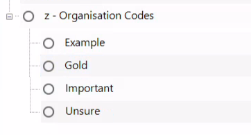

Adding Organisation Codes
What are ‘organisation’ codes?
Organisation codes are various different codes that are not part of the main ‘thematic’ coding, but that researchers create to to help with organising their coding.
A few examples:
- Example - Use for coding sections that are serve as illustrative example of another code.
- Gold - Use for coding sections that have high probability of later being used as a quote. (Though ensure to avoid cherry-picking!)
- Important - Use for coding sections that are important for the analysis. (This can be distinct in many cases from ‘Gold’.)
- Unsure - Use for coding sections that are coded to another code, but you are unsure whether either it is right code for the section or this coded section is making you question the overall code.

IMPORTANT - You do not need all of these! This is merely showing range of examples. Which and how many to have wil change based on personal preferences and analysis aims. For example, when working as part of a large team, ‘example’ can be useful for researchers to identify coded sections they think illustrate specific codes they are developing. This can then help inform discussion to agree a share coding schema for the project.
Creating Organisation Codes
- Go to the main ‘Codes’ folder.
- Right-click on any white space and select ‘New Code…’
- Provide it with a suitable name, such as ‘Organisation Codes’
- I have added “z - …” at the start as that ensure it’s placed at the end when alphabetically ordered.
- Drag and drop the existing ‘quotable quote’ code to become a child code of ‘z - Organisation Codes’.
- (Optional) rename it to ‘Gold’.
- Create another two child codes ‘Unsure’ and ‘Example’.
Other Types of Organisation Codes
Another way to use codes for organising is having codes to store excerpts you intend to use / have used in specific articles or thesis chapters. This can be combined with queries as well to aid finding most relevant sections. For example, a Matrix Coding Query - which we will cover next - with your writing organisation codes with your main coding schema.
Due to the much more niche use-case for these codes, they are definitely ones to chuck in their own folder to avoid cluttering the top-level folder.